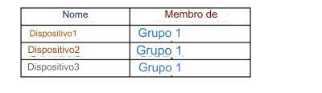

224- Você tem um locatário do Microsoft 365 que contém os dispositivos mostrados na tabela a seguir.

Os dispositivos são gerenciados usando o Microsoft Intune.
Você cria uma política de conformidade chamada Política1 e atribui a Política1 ao Grupo1.
A Política1 está configurada para marcar um
dispositivo como Compatível somente se as configurações de segurança do dispositivo corresponderem às configurações especificadas na política.
Você descobre que os dispositivos que não são membros do Grupo1 são mostrados como compatíveis.
Você precisa garantir que apenas os dispositivos aos quais foi atribuída uma política de conformidade possam ser mostrados como compatíveis.
Todos os outros dispositivos devem ser mostrados como Não compatível.
O que você deve fazer no centro de administração do Microsoft Intune?